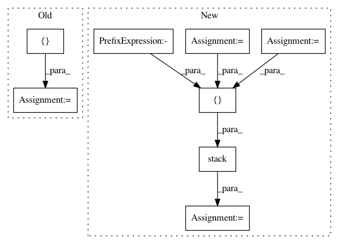

87d7376cf534ee003846621bcf5f12bee241f2ab,poem/core/keypoint_utils.py,,randomly_rotate_and_project_3d_to_2d,#Any#Any#Any#Any#Any#Any#Any#,596
Before Change
[-1.0, 0.0, 0.0],
[0.0, 1.0, 0.0],
])
default_center = tf.constant([0.0, 0.0, default_camera_z])
operator = tf.linalg.LinearOperatorFullMatrix(default_rotation_to_camera)
keypoints_3d = operator.matvec(keypoints_3d) + default_center
// Project to 2D.
After Change
if sequential_inputs:
// Currently we only support sequence-level const depth.
// TODO(liuti): Support varying depth for a sequence.
normalized_camera_depths = tf.random.uniform(
tf.shape(keypoints_3d)[:-3],
minval=normalized_camera_depth_range[0],
maxval=normalized_camera_depth_range[1],
seed=seed)
normalized_camera_depths = data_utils.recursively_expand_dims(
normalized_camera_depths, axes=[-1, -1])
else:
normalized_camera_depths = tf.random.uniform(
tf.shape(keypoints_3d)[:-2],
minval=normalized_camera_depth_range[0],
maxval=normalized_camera_depth_range[1],
seed=seed)
normalized_camera_depths = tf.expand_dims(normalized_camera_depths, axis=-1)
default_centers = tf.stack([
tf.zeros_like(normalized_camera_depths),
tf.zeros_like(normalized_camera_depths),
normalized_camera_depths,
],
axis=-1)
keypoints_3d += default_centers
// Project to 2D.
return keypoints_3d[Ellipsis, :-1] / tf.math.maximum(1e-12, keypoints_3d[Ellipsis, -1:])
In pattern: SUPERPATTERN
Frequency: 3
Non-data size: 8
Instances
Project Name: google-research/google-research
Commit Name: 87d7376cf534ee003846621bcf5f12bee241f2ab
Time: 2021-03-17
Author: liuti@google.com
File Name: poem/core/keypoint_utils.py
Class Name:
Method Name: randomly_rotate_and_project_3d_to_2d
Project Name: arraiy/torchgeometry
Commit Name: 85fd9ee010628a327a3e5b223106c3718c234cbd
Time: 2019-11-29
Author: ducha.aiki@gmail.com
File Name: kornia/utils/grid.py
Class Name:
Method Name: create_meshgrid3d
Project Name: geomstats/geomstats
Commit Name: 6f52d73623e0f7480061756fbe6e784c4b9854e6
Time: 2020-04-25
Author: nicolas.guigui@inria.fr
File Name: geomstats/geometry/beta_distributions.py
Class Name: BetaMetric
Method Name: inner_product_matrix